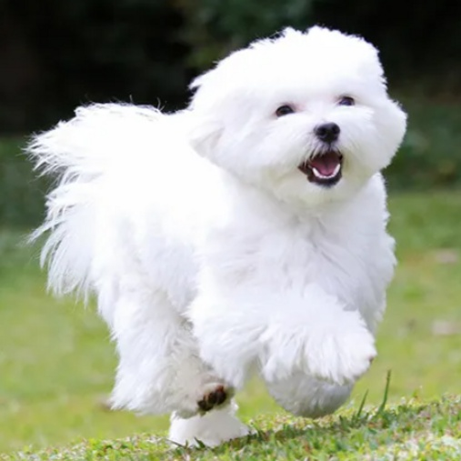

말티즈 Maltese
작은 체구와 깨끗해 보이는 흰 털이 특징인 말티즈는 남유럽 지방의 섬나라인 몰타 출신 소형견입니다. 작고 귀여운 외모로 한국인이 가장 많이 키우는 견종 조사에서 부동의 1위를 차지하고 있습니다.
작은 체구와 깨끗해 보이는 흰 털이 특징인 말티즈는 남유럽 지방의 섬나라인 몰타 출신 소형견입니다. 작고 귀여운 외모로 한국인이 가장 많이 키우는 견종 조사에서 부동의 1위를 차지하고 있습니다.
키는 수컷의 경우 20~25cm, 암컷의 경우 20~23cm이며, 몸무게는 1.8~3.2kg 사이입니다.
초기에는 갈색, 회색, 그리고 흰색 몰티즈가 존재했으나 현재는 거의 흰 털인 말티즈만 남았고, 갈색이 섞인 말티즈는 희귀합니다.
이들의 털은 가늘어서 일정 길이 이상으로 자라면 앞다리나 뒷다리 사이 등, 마찰이 자주 일어나는 부위의 털이 잘 엉켜 관리하기가 까다롭습니다.
활발하고 놀기를 좋아합니다. 또한 눈치가 빨라 주인의 마음을 민감하게 감지할 즐 알지만, 한편으로는 자기주장을 강하게 하고 고집이 있어 밥, 간식, 산책 등 자기가 원하는 바에 대해 적극적으로 의사를 표출하는 견종입니다.
자신이 원하는 바가 달성되어야 직성이 풀리는 성격이기 때문에 훈련이 잘못될 경우 욕구를 충족시키지 못한다고 판단되면 뒤끝을 보이며 휴지통을 뒤엎는 등의 문제를 일으키기 때문에 어릴 때 엄격하게 훈련을 시켜 놓아야 합니다.
말티즈는 EBS 반려견 행동 교정프로그램 "세상에 나쁜 개는 없다"에 두번째로 많이 출연한 문제견입니다.
슬개골이 좋지 않습니다. 게다가 활동량이 많고 활발한 성격 때문에 두 발로 서있거나, 격하게 뛰는 일이 많아 자칫하면 수술을 하게 될 수 있습니다.
유루증이라는 유전병을 가지고 있어 눈물을 많이 흘립니다. 이는 말티즈를 소형화 하는 과정에서 안구와 두상의 각도가 맞지 않아 눈물이 과도하게 생기는 유전병입니다. 이로 인해 눈곱도 상당히 많이 낍니다.
유전병으로 나이들어 류마티스염을 많이 앓으며 6~7살이 넘어가면 이빨이 약해지고 앞니도 빠집니다.